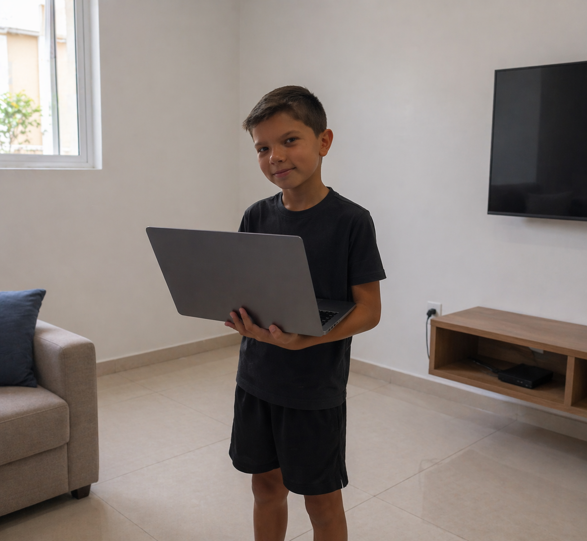

Augusto
Wolfart
Altmayer
Olá, me chamo Augusto e esse é meu portifólio pessoal. Sou estudante de Ciência da Computação e pretendo trabalhar com Java e sistemas ABAP.

Olá, me chamo Augusto e esse é meu portifólio pessoal. Sou estudante de Ciência da Computação e pretendo trabalhar com Java e sistemas ABAP.

Estudo Computação no terceiro semestre, com objetivo de trabalhar com Java e sistemas ABAP. Meu interesse por tecnologia começou com a curiosidade de entender como sistemas funcionam, juntamente com a facilidade de entender a lógica.
Tenho experiência com Python, Unity e Java. Atualmente aprendendo HTML, CSS e JavaScript na prática, construindo este portfólio como exercício real.
Busco uma oportunidade de estágio onde possa contribuir e crescer junto com um time de tecnologia.
Responsável por prestar suporte às atividades operacionais e administrativas do centro de distribuição. Atuo no controle de documentos, organização de informações, atendimento a fornecedores e transportadoras, garantindo a fluidez dos processos logísticos.
Desenvolvi base sólida em trabalho em equipe e cooperação. Responsável por apoiar rotinas do setor, priorizando cumprimento das normas organizacionais e ética profissional. Consolidei postura proativa dentro da cultura colaborativa da organização.
Curso de Criação de Games (60h), voltado ao desenvolvimento de jogos digitais, abordando lógica de programação, criação de mecânicas e aplicação prática em projetos.
Ver certificado ↗Com foco em liderança, comunicação, trabalho em equipe e desenvolvimento de colaboradores, aplicando boas práticas de gestão no ambiente organizacional.
Ver certificado ↗SEMESTRE_3
SEMESTRE_4
SEMESTRE_8
SEMESTRE_7
SEMESTRE_6
SEMESTRE_5